nchains(eight_schools_draws)[1] 4niterations(eight_schools_draws)[1] 100nvariables(eight_schools_draws)[1] 10For this set of exercises we will use draws from the classic eight schools model. These draws are included in both posterior and ArviZ.
The eight schools model is a meta-analysis model of standardized test results in different schools. The values theta[1] to theta[8] are the mean results for each school. mu is the population level mean, tau is the standard deviation of the population distribution.
Inspect the posterior object. How many chains, iterations and variables does it contain?
nchains(eight_schools_draws)[1] 4niterations(eight_schools_draws)[1] 100nvariables(eight_schools_draws)[1] 10Extract only the first chain.
eight_schools_draws |>
subset_draws(chain = 1)# A draws_array: 100 iterations, 1 chains, and 10 variables
, , variable = mu
chain
iteration 1
1 2.0
2 1.5
3 5.8
4 6.8
5 1.8
, , variable = tau
chain
iteration 1
1 2.8
2 7.0
3 9.7
4 4.8
5 2.8
, , variable = theta[1]
chain
iteration 1
1 3.96
2 0.12
3 21.25
4 14.70
5 5.96
, , variable = theta[2]
chain
iteration 1
1 0.271
2 -0.069
3 14.931
4 8.586
5 1.156
# ... with 95 more iterations, and 6 more variablesExtract only the first 10 iterations, from all the chains.
eight_schools_draws |>
subset_draws(iteration = 1:10)# A draws_array: 10 iterations, 4 chains, and 10 variables
, , variable = mu
chain
iteration 1 2 3 4
1 2.0 3.0 1.79 6.5
2 1.5 8.2 5.99 9.1
3 5.8 -1.2 2.56 0.2
4 6.8 10.9 2.79 3.7
5 1.8 9.8 -0.03 5.5
, , variable = tau
chain
iteration 1 2 3 4
1 2.8 2.80 8.7 3.8
2 7.0 2.76 2.9 6.8
3 9.7 0.57 8.4 5.3
4 4.8 2.45 4.4 1.6
5 2.8 2.80 11.0 3.0
, , variable = theta[1]
chain
iteration 1 2 3 4
1 3.96 6.26 13.3 5.78
2 0.12 9.32 6.3 2.09
3 21.25 -0.97 10.6 15.72
4 14.70 12.45 5.4 2.69
5 5.96 9.75 8.2 -0.91
, , variable = theta[2]
chain
iteration 1 2 3 4
1 0.271 1.0 2.1 5.0
2 -0.069 9.4 7.3 8.2
3 14.931 -1.2 5.7 6.0
4 8.586 12.5 2.8 2.7
5 1.156 11.9 3.2 3.2
# ... with 5 more iterations, and 6 more variablesThin the draws so that only half of the draws are included. Then try automatic thinning.
thin_draws(eight_schools_draws, thin = 2)# A draws_array: 50 iterations, 4 chains, and 10 variables
, , variable = mu
chain
iteration 1 2 3 4
1 2.01 3.0 1.79 6.46
2 5.81 -1.2 2.56 0.20
3 1.81 9.8 -0.03 5.48
4 5.47 -9.3 3.67 11.82
5 0.15 5.4 8.85 0.88
, , variable = tau
chain
iteration 1 2 3 4
1 2.8 2.80 8.7 3.8
2 9.7 0.57 8.4 5.3
3 2.8 2.80 11.0 3.0
4 4.0 9.33 1.7 4.3
5 3.9 2.82 6.0 15.8
, , variable = theta[1]
chain
iteration 1 2 3 4
1 4.0 6.26 13.3 5.78
2 21.3 -0.97 10.6 15.72
3 6.0 9.75 8.2 -0.91
4 4.0 11.92 5.2 18.87
5 1.8 4.31 13.1 9.07
, , variable = theta[2]
chain
iteration 1 2 3 4
1 0.27 1.0 2.1 5.0
2 14.93 -1.2 5.7 6.0
3 1.16 11.9 3.2 3.2
4 4.15 -6.1 4.1 13.0
5 0.66 2.8 4.7 11.6
# ... with 45 more iterations, and 6 more variablesthin_draws(eight_schools_draws)# A draws_array: 36 iterations, 4 chains, and 10 variables
, , variable = mu
chain
iteration 1 2 3 4
1 2.01 3.0 1.8 6.46
2 6.85 10.9 2.8 3.69
3 5.47 -9.3 3.7 11.82
4 0.15 5.4 8.9 0.88
5 -1.55 7.2 4.3 -4.30
, , variable = tau
chain
iteration 1 2 3 4
1 2.8 2.80 8.7 3.8
2 4.8 2.45 4.4 1.6
3 4.0 9.33 1.7 4.3
4 3.9 2.82 6.0 15.8
5 19.0 0.61 1.8 5.1
, , variable = theta[1]
chain
iteration 1 2 3 4
1 4.0 6.3 13.3 5.8
2 14.7 12.5 5.4 2.7
3 4.0 11.9 5.2 18.9
4 1.8 4.3 13.1 9.1
5 12.8 6.5 5.5 1.9
, , variable = theta[2]
chain
iteration 1 2 3 4
1 0.27 1.0 2.1 5.0
2 8.59 12.5 2.8 2.7
3 4.15 -6.1 4.1 13.0
4 0.66 2.8 4.7 11.6
5 25.60 7.6 5.0 -1.9
# ... with 31 more iterations, and 6 more variablesExtract the variable mu and summarise it via mean and sd.
eight_schools_draws |>
subset_draws(variable = "mu") |>
summarise_draws(mean, sd)# A tibble: 1 × 3
variable mean sd
<chr> <dbl> <dbl>
1 mu 4.18 3.40Create a new variable that is the difference between school 1 (theta[1] and school 2 (theta[2]) means. Call it diff_1_2. Do the same with school 3 (theta[3]) and school 4 (theta[4]). Then summarise these new variables with median, 0.3 and 0.7 quantiles.
eight_schools_draws |>
mutate_variables(
diff_1_2 = `theta[2]` - `theta[1]`,
diff_3_4 = `theta[3]` - `theta[4]`
) |>
subset_draws(
variable = c("diff_1_2", "diff_3_4")
) |>
summarise_draws(median, ~quantile2(.x, c(0.3, 0.7)))# A tibble: 2 × 4
variable median q30 q70
<chr> <dbl> <dbl> <dbl>
1 diff_1_2 -0.436 -2.57 0.505
2 diff_3_4 -0.434 -2.89 0.807Plot the marginal posteriors for the school means.
eight_schools_draws |>
subset_draws(variable = "theta") |>
mcmc_intervals()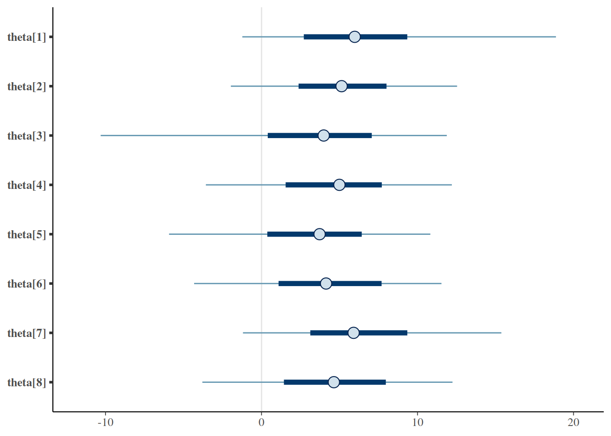
Plot the variables mu and tau in an pairs plot.
eight_schools_draws |>
subset_draws(variable = c("mu", "tau")) |>
mcmc_pairs()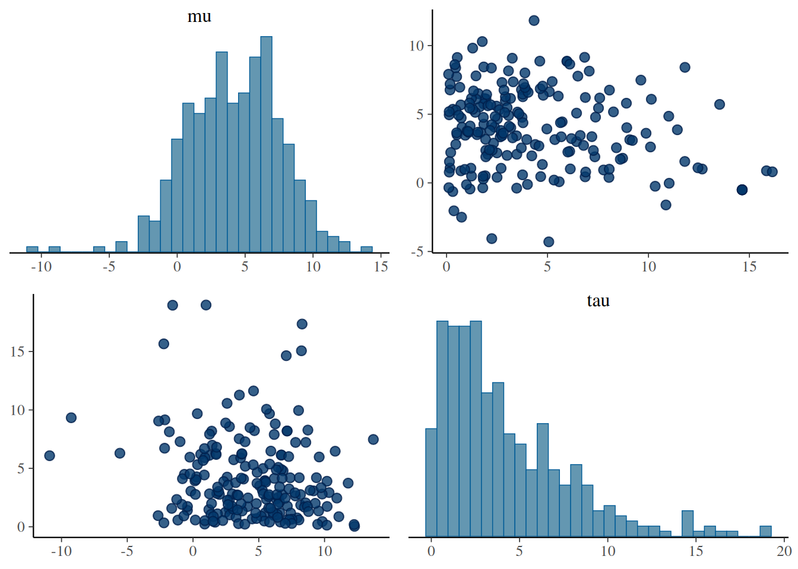
Calculate the R-hat for all the variables in the draws object (eight_schools_draws). Which variables have high R-hat (> 1.01)?
eight_schools_draws |>
summarise_draws(rhat)# A tibble: 10 × 2
variable rhat
<chr> <dbl>
1 mu 1.02
2 tau 1.01
3 theta[1] 1.01
4 theta[2] 1.02
5 theta[3] 1.01
6 theta[4] 1.02
7 theta[5] 1.01
8 theta[6] 1.02
9 theta[7] 1.00
10 theta[8] 1.02Calculate the bulk and tail ESS for all the variables in the model.
eight_schools_draws |>
summarise_draws(ess_bulk, ess_tail)# A tibble: 10 × 3
variable ess_bulk ess_tail
<chr> <dbl> <dbl>
1 mu 558. 322.
2 tau 246. 202.
3 theta[1] 400. 254.
4 theta[2] 564. 372.
5 theta[3] 312. 205.
6 theta[4] 695. 252.
7 theta[5] 523. 306.
8 theta[6] 548. 205.
9 theta[7] 434. 308.
10 theta[8] 355. 146.Calculate the mean of each variable, and also the Monte Carlo standard error of the mean.
eight_schools_draws |>
summarise_draws(mean, mcse_mean)# A tibble: 10 × 3
variable mean mcse_mean
<chr> <dbl> <dbl>
1 mu 4.18 0.150
2 tau 4.16 0.213
3 theta[1] 6.75 0.319
4 theta[2] 5.25 0.202
5 theta[3] 3.04 0.447
6 theta[4] 4.86 0.189
7 theta[5] 3.22 0.232
8 theta[6] 3.99 0.222
9 theta[7] 6.50 0.250
10 theta[8] 4.57 0.273Then do the same for the 0.05 and 0.95 quantiles. Think about how the Monte Carlo standard error might influence how you report the quantiles.
eight_schools_draws |>
summarise_draws(quantile2, mcse_quantile)# A tibble: 10 × 5
variable q5 q95 mcse_q5 mcse_q95
<chr> <dbl> <dbl> <dbl> <dbl>
1 mu -0.854 9.39 0.551 0.415
2 tau 0.309 11.0 0.114 0.964
3 theta[1] -1.23 18.9 0.820 1.36
4 theta[2] -1.97 12.5 0.676 0.848
5 theta[3] -10.3 11.9 2.18 0.623
6 theta[4] -3.57 12.2 0.956 0.449
7 theta[5] -5.93 10.8 1.62 0.736
8 theta[6] -4.32 11.5 1.16 0.432
9 theta[7] -1.19 15.4 0.458 0.622
10 theta[8] -3.79 12.2 0.997 1.29 Calculate the minimum sample size for stable estimates for each variable in the model. Which has the highest minimum sample size?
eight_schools_draws |>
summarise_draws(pareto_min_ss)# A tibble: 10 × 2
variable pareto_min_ss
<chr> <dbl>
1 mu 17.1
2 tau 10.4
3 theta[1] 11.3
4 theta[2] 13.5
5 theta[3] 41.5
6 theta[4] 14.0
7 theta[5] 15.7
8 theta[6] 15.2
9 theta[7] 13.0
10 theta[8] 10.2We can generate prior predictions from the eight schools model, using the following function.
Generate 1000 prior predictive draws, and plot the distributions for each school. Try with different mu_prior_sd and tau_prior_sd values (e.g. 1, 10, 100).
eight_schools_prior(ndraws = 1000, mu_prior_sd = 1, tau_prior_sd = 1) |>
ppd_intervals()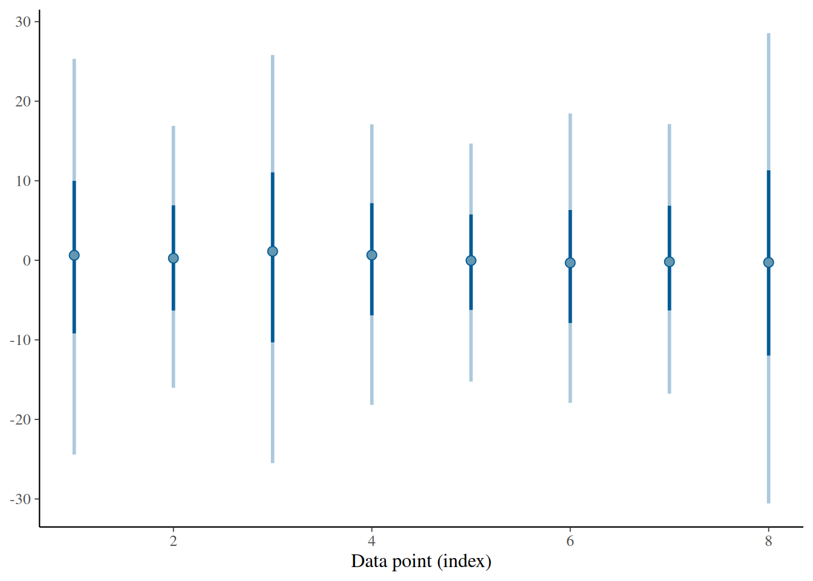
eight_schools_prior(ndraws = 1000, mu_prior_sd = 0.01, tau_prior_sd = 1) |>
ppd_intervals()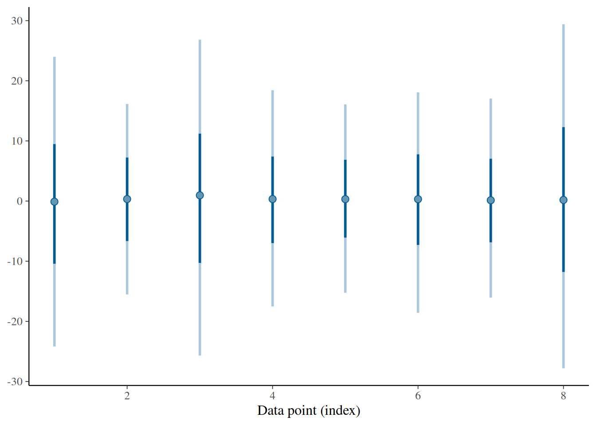
eight_schools_prior(ndraws = 1000, mu_prior_sd = 100, tau_prior_sd = 1) |>
ppd_intervals()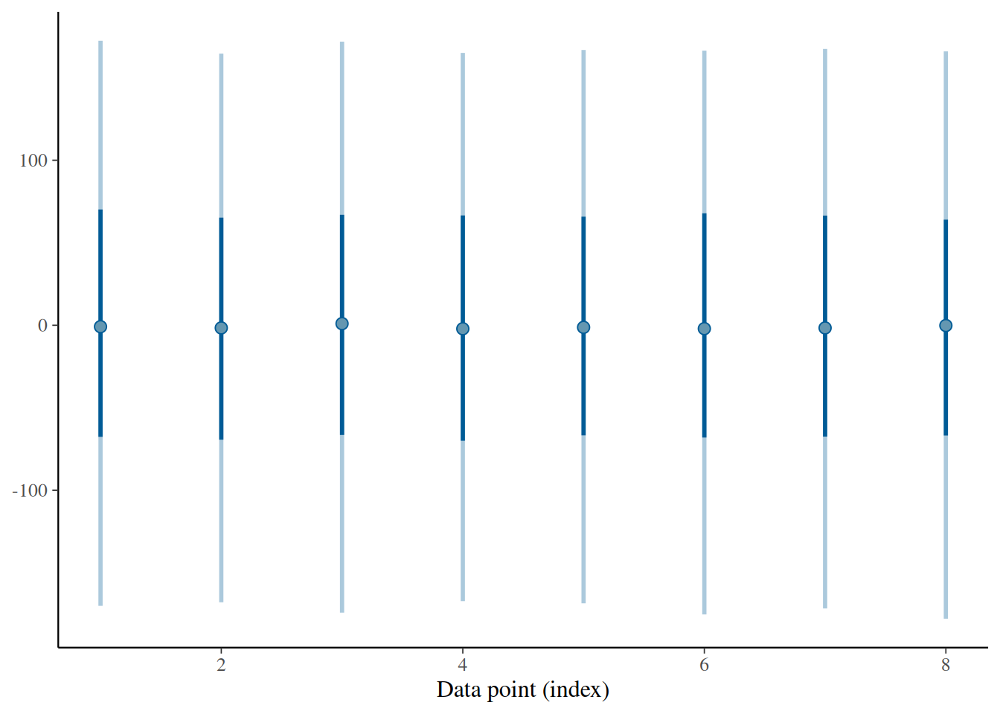
eight_schools_prior(ndraws = 1000, mu_prior_sd = 1, tau_prior_sd = 0.01) |>
ppd_intervals()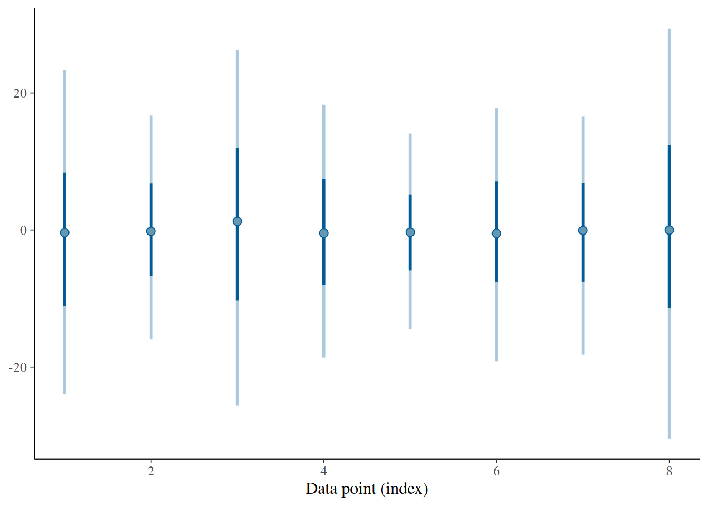
eight_schools_prior(ndraws = 1000, mu_prior_sd = 1, tau_prior_sd = 100) |>
ppd_intervals()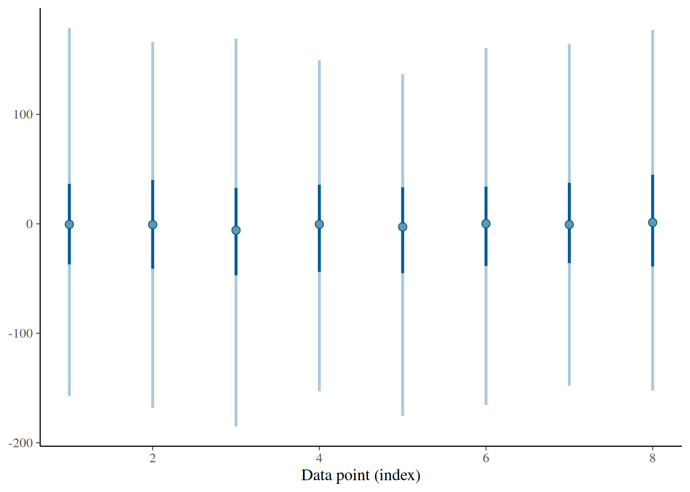
We can create posterior predictive draws from our posterior draws and plot against our actual observations.
Plot the posterior predictions on top of the actual observations. Then use the PIT-ECDF plot.
y <- c(28, 8, -3, 7, -1, 1, 18, 12)
ppc_intervals(y, eight_schools_post_pred)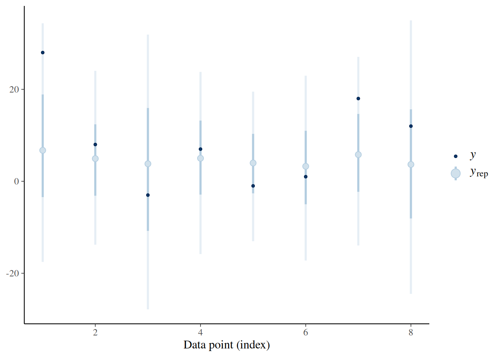
ppc_pit_ecdf(y, eight_schools_post_pred, method = "correlated")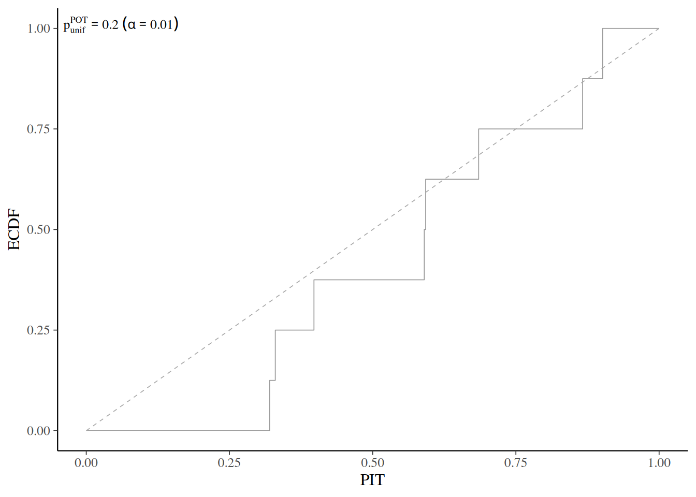
Check for prior and likelihood sensitivity in the eight schools model. First check by power-scaling all priors jointly, then select only the “mu” and only the “tau” prior separately.
eight_schools_draws_ps <- example_powerscale_model("eight_schools")$draws
powerscale_sensitivity(eight_schools_draws_ps, variable = c("mu", "tau", "theta"))Sensitivity based on cjs_dist
Prior selection: all priors
Likelihood selection: all data
variable prior likelihood diagnosis
mu 0.104 0.104 potential prior-likelihood conflict
tau 0.150 0.013 potential strong prior / weak likelihood
theta[1] 0.084 0.078 potential prior-likelihood conflict
theta[2] 0.074 0.077 potential prior-likelihood conflict
theta[3] 0.054 0.048 potential strong prior / weak likelihood
theta[4] 0.068 0.069 potential prior-likelihood conflict
theta[5] 0.049 0.048 -
theta[6] 0.064 0.059 potential prior-likelihood conflict
theta[7] 0.092 0.096 potential prior-likelihood conflict
theta[8] 0.070 0.072 potential prior-likelihood conflictpowerscale_sensitivity(eight_schools_draws_ps, variable = c("mu", "tau", "theta"), prior_selection = "mu")Sensitivity based on cjs_dist
Prior selection: mu
Likelihood selection: all data
variable prior likelihood diagnosis
mu 0.106 0.104 potential prior-likelihood conflict
tau 0.010 0.013 -
theta[1] 0.053 0.078 potential prior-likelihood conflict
theta[2] 0.058 0.077 potential prior-likelihood conflict
theta[3] 0.047 0.048 -
theta[4] 0.054 0.069 potential prior-likelihood conflict
theta[5] 0.049 0.048 -
theta[6] 0.059 0.059 potential prior-likelihood conflict
theta[7] 0.055 0.096 potential prior-likelihood conflict
theta[8] 0.052 0.072 potential prior-likelihood conflictpowerscale_sensitivity(eight_schools_draws_ps, variable = c("mu", "tau", "theta"), prior_selection = "tau")Sensitivity based on cjs_dist
Prior selection: tau
Likelihood selection: all data
variable prior likelihood diagnosis
mu 0.008 0.104 -
tau 0.157 0.013 potential strong prior / weak likelihood
theta[1] 0.037 0.078 -
theta[2] 0.021 0.077 -
theta[3] 0.032 0.048 -
theta[4] 0.019 0.069 -
theta[5] 0.032 0.048 -
theta[6] 0.022 0.059 -
theta[7] 0.040 0.096 -
theta[8] 0.023 0.072 -Next plot sensitivity using density plots. Plot only the mu and tau variables.
powerscale_plot_dens(eight_schools_draws_ps, variable = c("mu", "tau"))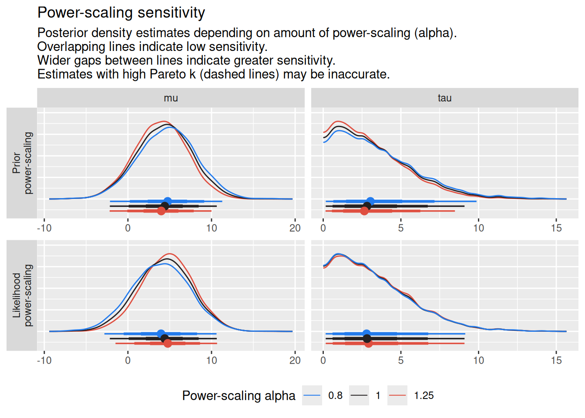
powerscale_plot_dens(eight_schools_draws_ps, variable = c("mu", "tau"), prior_selection = "mu")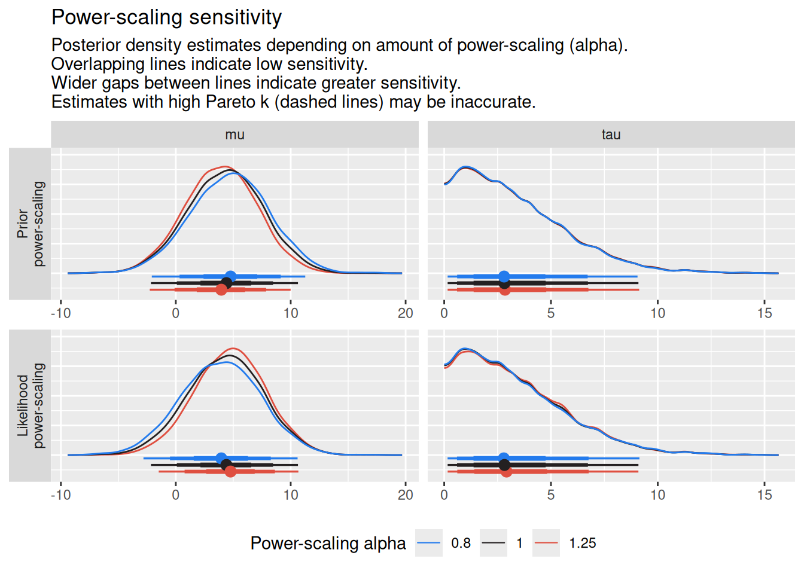
powerscale_plot_dens(eight_schools_draws_ps, variable = c("mu", "tau"), prior_selection = "tau")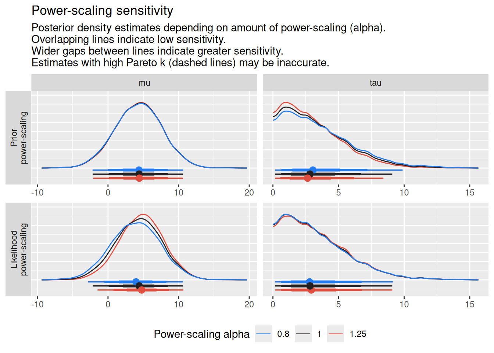
We have provided four sets of posterior draws from hierarchical models of observed migratory bird counts recorded between 2000 and 2020 at the Hanko Bird Observatory (Halias).
For species \(j\),
\(y \sim \mathrm{Poisson}(\lambda_j)\)
or
\(y \sim \mathrm{NegativeBinomial}(\lambda_j, \phi).\)
The species-specific abundances are linked through a hierarchical prior,
\(\log(\lambda_j) \sim \mathrm{Normal}(\mu, \sigma)\)
where \(\mu\) represents the average abundance across species and \(\sigma\) controls the amount of pooling between species.
Your task is to explore the posterior draws and diagnostic outputs for the four fitted models.
As you work through the diagnostics, try to identify which model corresponds to each of the following situations:
Use posterior summaries, convergence diagnostics, posterior predictive checks, and sensitivity analyses to guide your investigation.
You can also look at the Stan model (birds_per_year.stan) and consider how you might improve it.
# Your code here